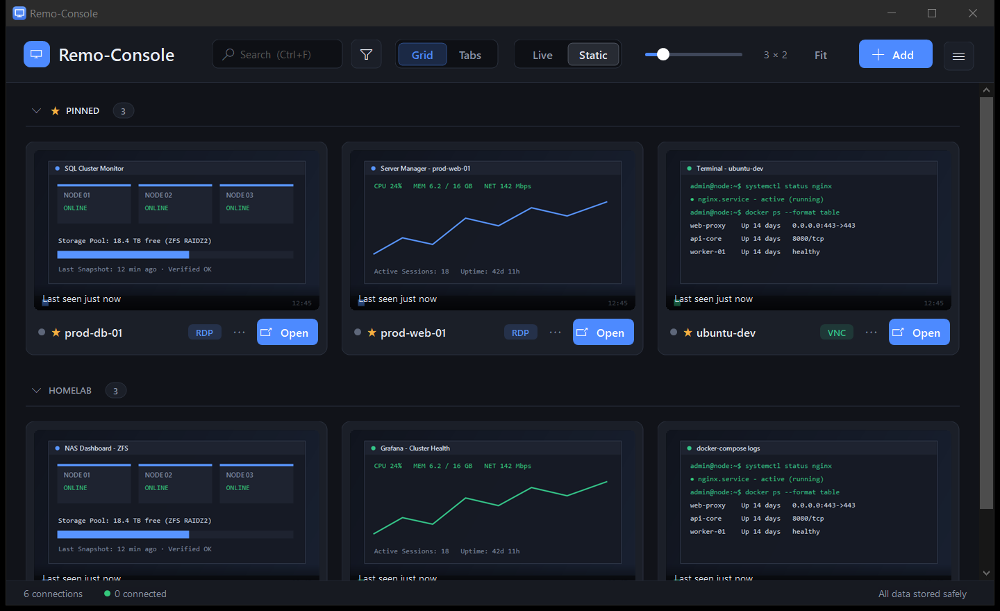

All Your RDP & VNC Servers.
One Fast Dashboard.
Monitor and control Windows, Linux, and homelab machines from a single dark-themed grid of live and static preview cards. Ships as one ~155 KB portable Windows executable with zero dependencies.

Everything you need. Zero Electron bloat.
Designed for sysadmins, DevOps engineers, and homelabbers who want instant visual control over dozens of remote machines.
Live & Static Preview Cards
Toggle any host — or an entire group — between LIVE (real running session inside the tile) and STATIC (last captured screenshot with 1-minute TCP reachability checks).
Smart Groups & Pinned Favorites
Pin mission-critical servers to the top, collapse or expand groups on click, rename groups in bulk, move cards from the menu, filter by RDP/VNC, and sort by recency or status.
Native RDP + Custom VNC Engine
Embeds Microsoft's native mstscax RDP engine (NLA/CredSSP, clipboard, drives, audio, plus mstsc.exe fallback) alongside a custom RFB 3.3–3.8 VNC client with ZRLE and hardware cursors.
Crash-Safe Storage & DPAPI
Passwords are encrypted at rest with Windows DPAPI (your user + PC only). Every save uses WriteThrough, SHA-256 verification, atomic swap, 30 rolling backups, and corruption quarantine.
Engineered for Low CPU
64 KB buffered VNC reads, direct GDI StretchDIBits rendering, staggered auto-reconnects, and automatic ~3 fps preview throttling that switches to full frame rate the instant you open a card.
Zero-SDK Build & Portable Mode
Run straight from a USB drive with --data .\data, export/import password-free JSON, or compile from source in 2 seconds using the built-in Windows C# compiler.
Intuitive from minute one
Pick a workflow below to see how to get the most out of Remo-Console.
Download & Run
Grab Remo-Console.exe from GitHub Releases and double-click it. No installer, no admin prompt.
Add Your First Host
Press Ctrl+N (or click Add connection), choose RDP or VNC, enter the hostname/IP, and optionally assign a group.
Connect & Focus
Double-click any card or click Open to jump into full interactive mode. Press F11 for fullscreen; close to return to the grid.
Pin Your Top Servers
Click ⋯ on any card → Pin to top. Pinned hosts always appear in the ★ Pinned section at the top of the dashboard.
Collapse & Bulk-Manage Groups
Click any group header to collapse/expand it (auto-expands when searching with Ctrl+F). Hover a group header and click ⋯ to flip the whole group Live/Static or rename it.
Move, Filter & Sort
Use ⋯ → Move to group on any card to reorganize instantly. Click the All groups filter button to filter by RDP/VNC or sort by Name, Recently connected, Protocol, or Status.
Static Mode (Zero Overhead)
Static cards display the last captured desktop screenshot without holding a connection open. A subtle green/red dot shows 1-minute TCP port reachability and latency on hover.
Live Preview Mode
Switch a card, a group, or All cards to Live to stream active sessions right inside the tiles (throttled to ~3 fps in preview to keep CPU low).
Grid vs Tabs & Fit
Drag the size slider or click Fit to pack all tiles cleanly without scrolling. Switch to Tabs mode anytime if you prefer a classic browser-style tab bar.
Portable USB Folder
Run Remo-Console.exe --data .\data to keep data.rc, thumbnails, backups, and logs right next to the executable.
Safe Team Sharing
Open the ☰ menu → Export connections (no passwords) to share host inventories as clean JSON without ever leaking credentials.
Built-In Diagnostics
Run Remo-Console.exe --selftest to verify SHA-256 crash recovery, DPAPI encryption, DES crypto, and the full VNC/RFB loopback pipeline.
Why teams switch to Remo-Console
Lightweight portability meets modern visual server management.
| Feature | Remo-Console | mstsc.exe | RDCMan | mRemoteNG |
|---|---|---|---|---|
| RDP + VNC unified dashboard | ✓ Yes | RDP only | RDP only | Yes |
| Live preview grid + Fit layout | ✓ Yes | No | Basic | No |
| Collapsible groups & Pinned favorites | ✓ Yes | No | Groups only | Tree only |
| Static screenshot + TCP reachability dot | ✓ Yes | No | No | No |
| Single portable EXE (~155 KB) | ✓ Yes | Built-in | Portable | Heavy install |
| Crash-safe SHA-256 storage + 30 backups | ✓ Yes | No | No | No |
| 100% offline / zero telemetry | ✓ Yes | N/A | Yes | Yes |
Build from source in 2 seconds
No Visual Studio or .NET SDK required — compiles directly with the C# compiler built into Windows.
git clone https://github.com/TinToSer/Remo-Console.git cd Remo-Console .\build.ps1 .\bin\Remo-Console.exe --selftest .\bin\Remo-Console.exe
Frequently asked questions
Does Remo-Console send any telemetry or connect to external servers?
Never. Remo-Console is 100% offline and only initiates network connections to the RDP and VNC hosts you explicitly add.
How are my saved passwords protected?
Passwords are encrypted at rest using Windows DPAPI (DataProtectionScope.CurrentUser), meaning only your Windows user account on the same PC can decrypt them. Connection exports always strip passwords.
What happens if my PC crashes while saving?
Every save writes to a temporary file with WriteThrough, verifies its SHA-256 checksum, and atomically swaps via File.Replace. Up to 30 rolling backups are kept in backups\, and any unreadable file is quarantined rather than deleted.
What are the system requirements?
Windows 10 or Windows 11 (x64) with .NET Framework 4.x (already pre-installed on Windows).